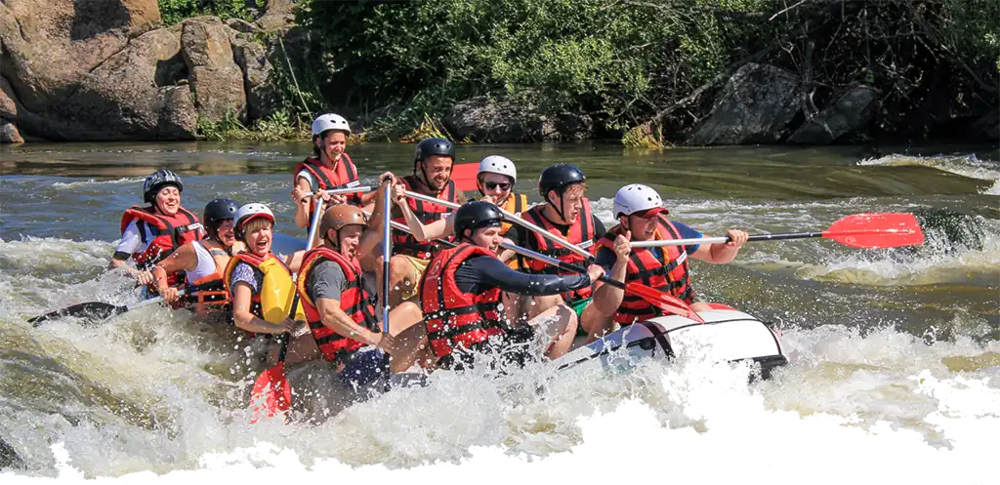

Ultimate Rapids Adventure
Duration: Full day tripGet ready for the ultimate thrill on this full-day white water rafting expedition. This adventure is designed for adrenaline lovers and experienced rafters looking to conquer some of the most challenging rapids.
Family Fun Float
Duration: Half-Day TripPerfect for families and first-time rafters, this half-day trip offers a more relaxed rafting experience on gentle rapids suitable for all ages. After a safety briefing and fitting of equipment, you'll embark on a scenic float down the river, surrounded by stunning landscapes and abundant wildlife.
Scenic Eco-Tour Expedition
Duration: Full-Day TripImmerse yourself in nature on this full-day scenic eco-tour rafting trip, perfect for nature lovers and those seeking a more serene adventure. Begin your journey with a peaceful morning paddle through calm waters, where you'll have the opportunity to spot diverse wildlife, including birds, fish, and mammals native to the area.
Team-Building Challenge
Duration: Half-Day TripDesigned for corporate groups and organizations, this half-day team-building rafting trip focuses on fostering teamwork, communication, and camaraderie. After a comprehensive safety briefing, your group will be divided into teams and assigned experienced guides who will facilitate various team-building activities throughout the trip.
| Trip Name | Duration | Description | Experience Level | Included |
|---|---|---|---|---|
| Ultimate Rapids Adventure | Full-Day Trip | Tackle class IV and V rapids, experience powerful currents and drops. Includes a gourmet lunch. | Experienced Rafters | Safety gear, guided tour, lunch |
| Family Fun Float | Half-Day Trip | Enjoy gentle class I and II rapids, perfect for families and first-time rafters. | All Ages | Safety gear, guided tour, snacks |
| Scenic Eco-Tour Expedition | Full-Day Trip | Immerse in nature, spot wildlife, and learn about the ecosystem. Includes mild rapids and a picnic. | Nature Lovers | Safety gear, guided tour, lunch |
| Team-Building Challenge | Half-Day Trip | Foster teamwork and communication while navigating class III rapids. | Corporate Groups | Safety gear, guided tour, team-building activities |